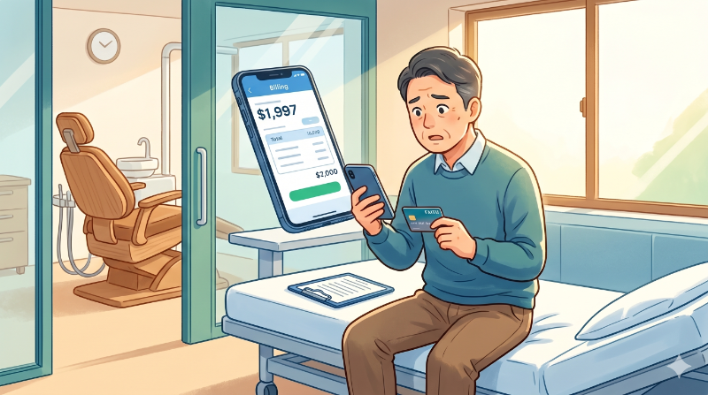
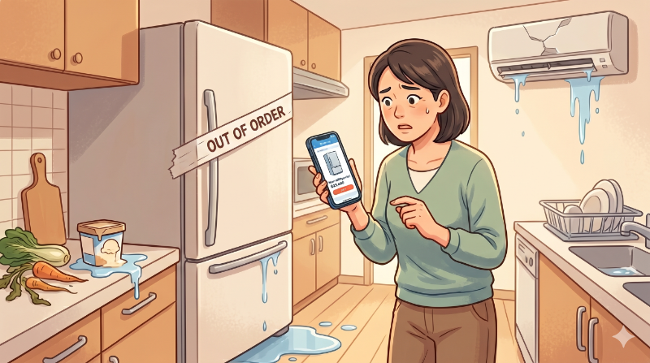

20歳以上69歳以下、毎月安定した収入のある方が対象。審査結果によってはご希望に沿えない場合があります。
初めてでも安心
一般的なカードローン（15〜18%）より低く設定。毎月の返済額も総支払額も抑えられます。
詳細を見る ↓申し込みから審査まですべてWEB完結。WEBで口座設定すれば本人確認書類も不要。
詳細を見る ↓返済は口座自動引き落とし。ATMでの返済も月3回まで出金手数料0円。
詳細を見る ↓勤め先への電話連絡は原則不要。審査状況によって連絡が必要な場合も、第三者に知られません。
深夜でも休日でも、スマートフォンからいつでも申し込めます。誰かに見られる心配もありません。
審査完了後、キャッシング振込サービスを利用すれば最短数十秒で口座にお振り込み。
明細は「MyJCB」でWEB確認。自宅に書類が届かないため、家族の目を気にせず利用できます。
消費者金融ではなくJCB自身が取り扱うカードローン。国際ブランドの信頼と安心感で、初めての方も安心してご利用いただけます。
| ご利用可能枠（限度額） | 融資利率（年利） |
|---|---|
| 900万円 | 1.30% |
| 700〜899万円 | 3.30% |
| 500〜699万円 | 4.40% |
| 400〜499万円 | 6.20% |
| 350〜399万円 | 6.90% |
| 250〜349万円 | 8.00% |
| 150〜249万円 | 10.50% |
| 〜149万円 | 12.50% |
※ キャッシングリボ払いの場合。ご利用可能枠内の借り入れであれば融資利率（年利）は一定です。
JCBクレジットカードとの比較（15万円を借りた場合）
※シミュレーション結果は実際のお支払い金額と異なる場合があります。
※上の対象ATMは一例です。

インプラントや矯正など、保険が効かない歯科治療や、急な入院・手術の自己負担額。まとまった費用が突然必要になるシーンで、すぐに用意できるFAITHが役立ちます。
訃報は突然やってきます。葬儀費用や香典、遠方への交通費など、準備できていなかった出費に。お祝い事のご祝儀やお祝いの場への参加費用も同様です。

冷蔵庫やエアコン、給湯器など、壊れたらすぐに替えなければならない家電の買い替え費用に。「次の給料日まで待てない」急ぎの出費に対応できます。
転勤や住環境の変化で急に引越しが決まったとき、敷金・礼金・引越し業者費用など初期費用がまとめて必要になります。給料日前でもすぐに動けます。
事故や故障による急な修理代、予想より高くなった車検費用など。車がないと生活できない方にとって、待ったなしの出費です。
入学金や教材費、資格・スクールの受講料など、時期が決まっていて待てない教育費用に。奨学金の振り込みまでのつなぎ資金としても活用できます。
複数の借り入れを金利の低いFAITHにまとめることで、毎月の返済額と利息の総額を抑えられる可能性があります。返済先を一本化して、家計の見通しを立てやすくします。
WEB申し込みの場合
返済金額・返済期間シミュレーション
※元利均等返済方式での試算です。実際の返済額とは異なる場合があります。
| 借入金額 | |
|---|---|
| 借入金利（年利） | |
| 毎月の返済額 | |
| 返済月数 | |
| 返済総額 | |
| 利息総額 |
WEBで最短5分で申し込み完了。口座振替をWEBで設定すれば本人確認書類の提出が不要です。24時間365日申し込み可能。
審査は最短即日で完了。審査結果はメールでお知らせ。後日、登録住所にカードが届きます。カード到着前でもキャッシング振込サービスで借り入れ可能です。
最短数十秒でお借り入れ可能。WEB・電話の「キャッシング振込サービス」または全国のATMからご利用いただけます。
毎月10日に指定口座より自動引き落とし。一括返済も可能で、早期返済でその分利息がおトクになります。
資金使途：自由 ／ 担保・保証人不要
| 名称 | 融資利率（年利） | 返済方式 | 返済期間 |
|---|---|---|---|
| キャッシング1回払い | 5.00% | 元利一括払い | 23〜56日 ／ 1回 |
| キャッシングリボ払い | 1.30〜12.50% | 残高スライド元金定額払い / 毎月元金定額払い / ボーナス併用払い | 利用残高および返済方式に応じ完済するまで |
遅延損害金：年20.00%（1年365日・日割り計算）
取扱会社：株式会社ジェーシービー〈登録番号 関東財務局長（15）第00183号 ／ 日本貸金業協会会員 第002442号〉
ご利用可能枠は当社所定の審査後に決定します。入会には審査があります。
貸付条件を確認し、借りすぎに注意しましょう。